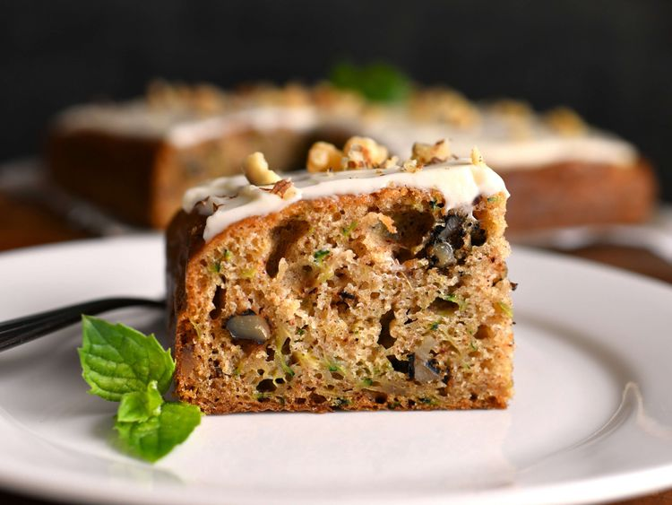

Moist Zucchini Cake

Description
This zucchini cake is my son’s favorite — it stays very moist and also freezes well. I usually frost it with cream cheese frosting, but it’s also great plain.
Ingredients
- 2 cups all-purpose flour
- 3 teaspoons ground cinnamon
- 2 teaspoons baking soda
- 1 teaspoon salt
- ¼ teaspoon baking powder
- 2 cups grated zucchini
- 1 ½ cups white sugar
- 1 cup vegetable oil
- 3 large eggs, lightly beaten
- 2 teaspoons vanilla extract
- 1 cup chopped walnuts
Steps
- Preheat the oven to 350 degrees F (175 degrees C). Lightly grease a 9x13-inch baking dish.
- Combine flour, cinnamon, baking soda, salt, and baking powder in a bowl. Mix zucchini, sugar, vegetable oil, eggs, and vanilla in a separate bowl. Add flour mixture to zucchini mixture and stir until just combined. Stir in walnuts, then pour batter into the prepared pan.
- Bake in the preheated oven until a toothpick inserted in the center comes out clean, about 45 minutes.